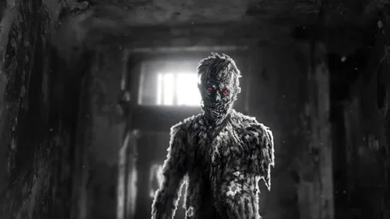

Haiti - Vilas e plantações
ZUMBI
Corpo reanimado, sem vontade própria.
Curiosidades
Raízes no Vodu haitiano: O conceito original do zumbi está profundamente enraizado na cultura e religião popular do Haiti, ligado a rituais de feitiçaria e venenos tradicionais.
Ausência de livre-arbítrio: Na lenda folclórica autêntica, o zumbi não é um monstro devorador de carne, mas sim um corpo reanimado que não possui vontade própria, sendo controlado por um feiticeiro (bokor).
Simbolismo histórico: Os historiadores apontam que o mito do zumbi carrega o profundo trauma histórico da escravidão nas Américas, simbolizando a perda total da autonomia e da liberdade corporal.